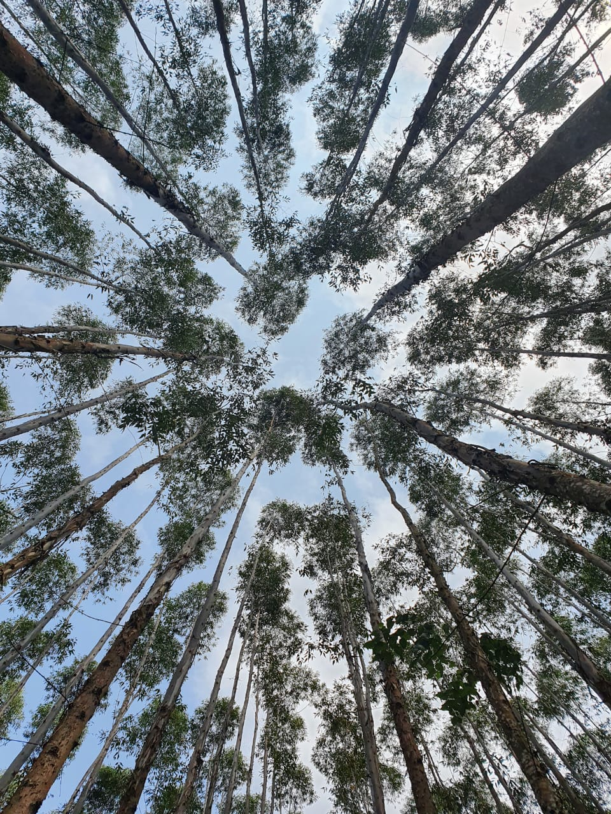
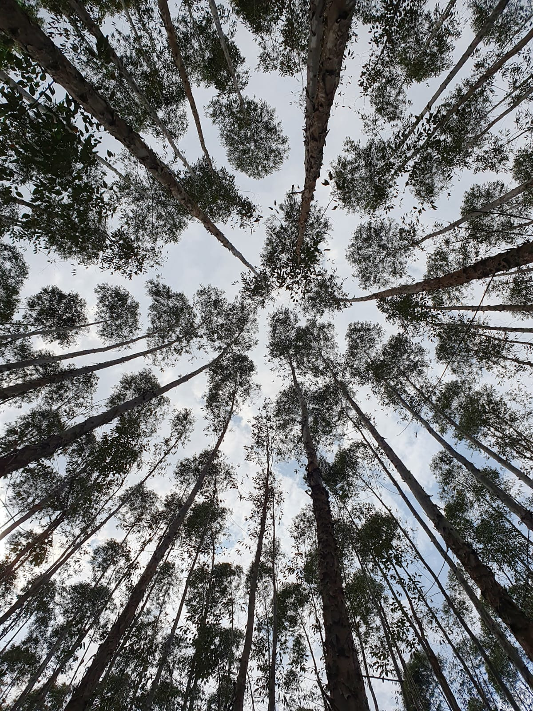
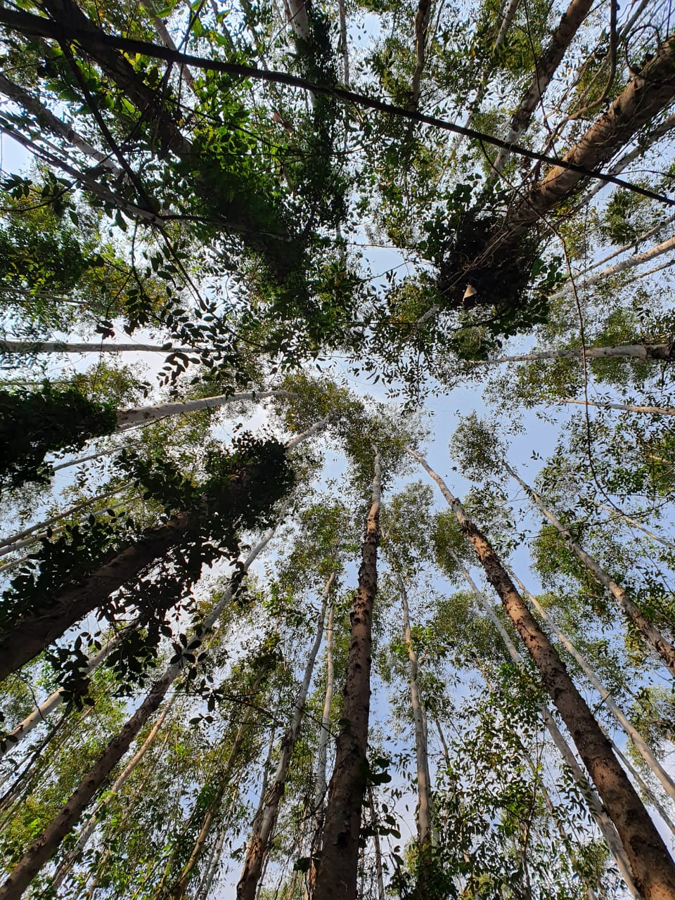
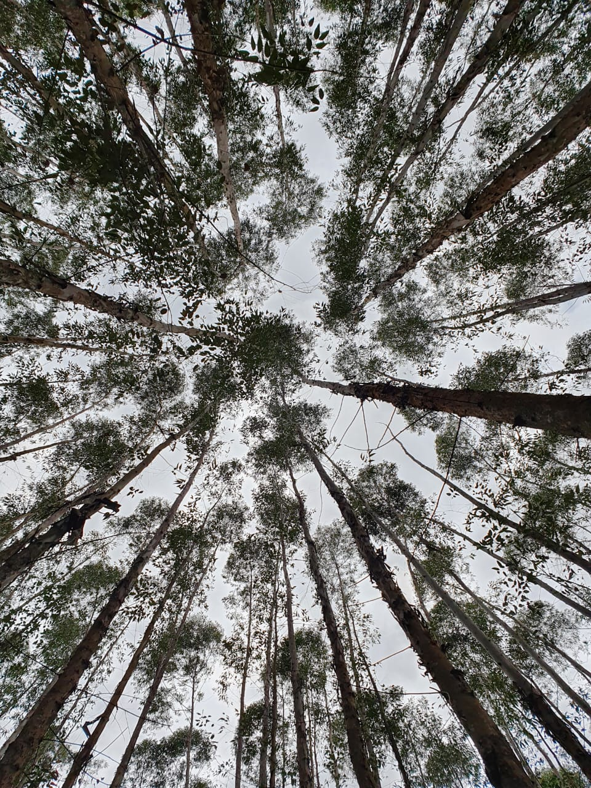
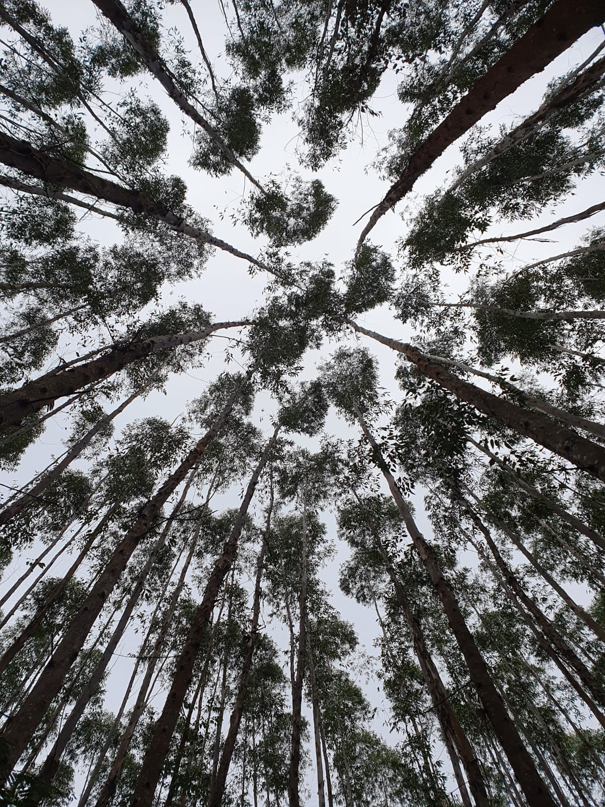
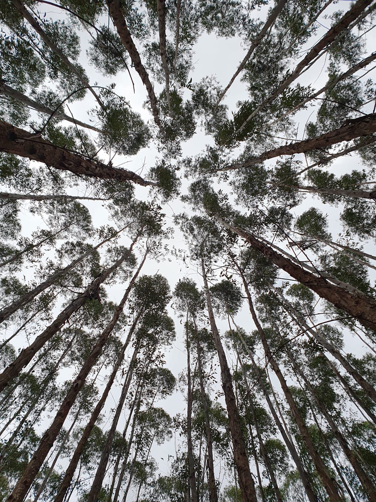
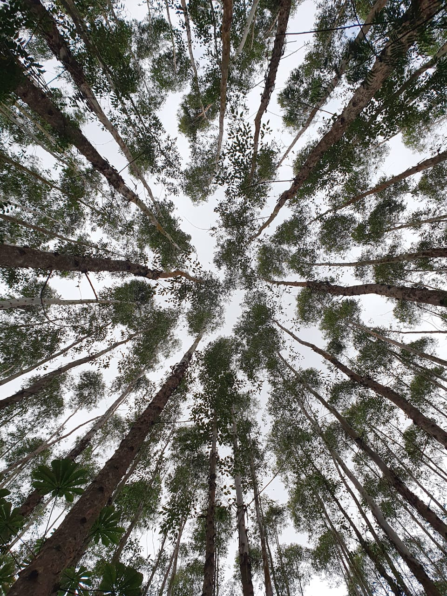
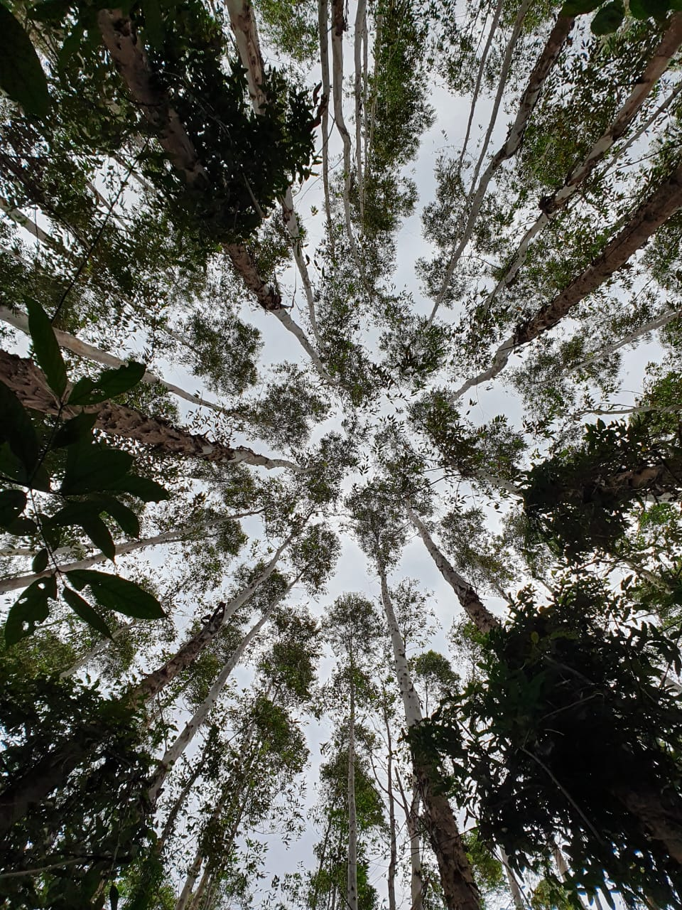
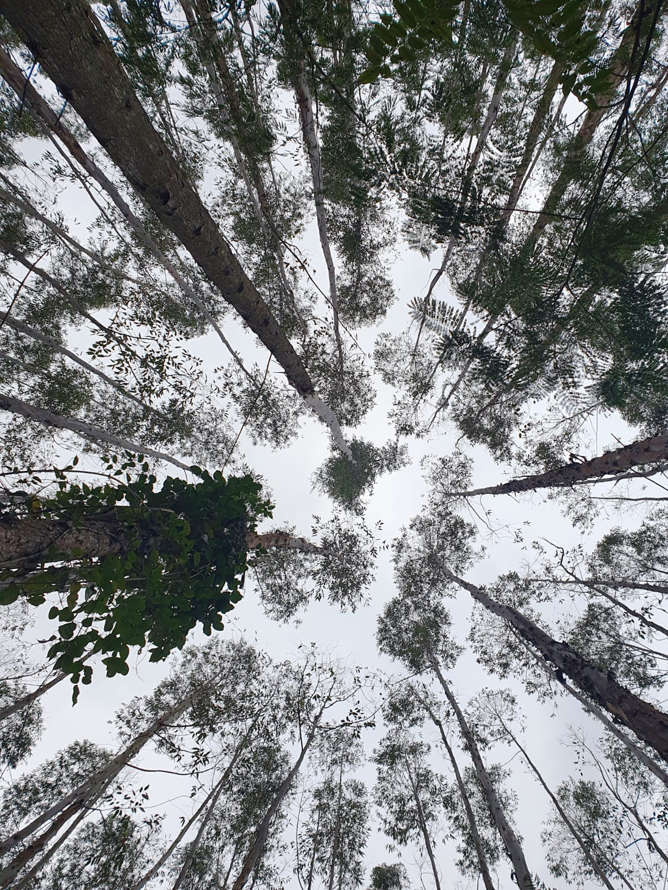
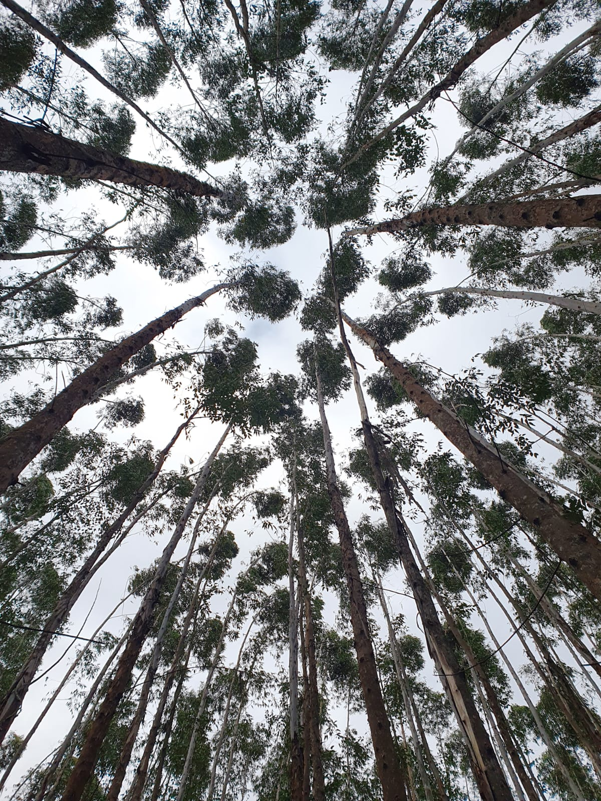

Análise de dossel - Inventário Florestal
1 Análise de dossel
Análise de dossel de onze parcelas amostradas durante o inventário com imagem feita utilizando a câmera do celular Samsung S10e.










2 Observações
A parcela com maior quantidade de pixels na classe de gap grande (menor cobertura), foi a parcela 20 com 44.4% dessa classe de espaçamento.
Já a parcela com maior quantidade de pixels na classe de gap pequeno (maior cobertura de dossel) foi a parcela 21 com 3.3% dessa classe de espaçamento.
A parcela 6 obteve a maior cobertura foliar, com 77.9%. Já a parcela 20, apresentou a menor porcentagem de cobertura foliar, com 51.5%
3 DAP médio por parcela
4 Considerações finais
Importante salientar que algumas parcelas apresentaram cobertura foliar de espécies nativas, o que gerou influência nas análises de dossel feitas por pixel apresentadas anteriormente.